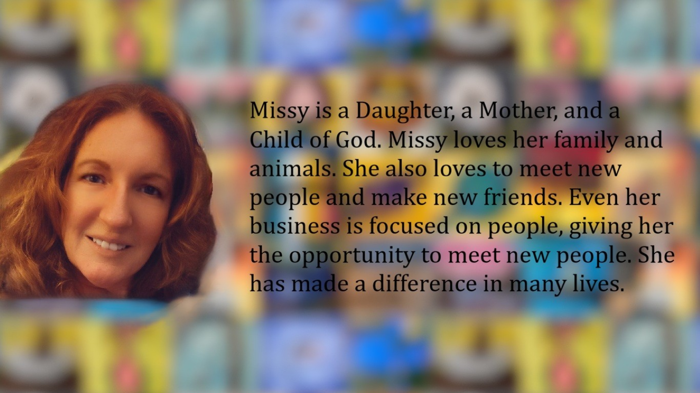
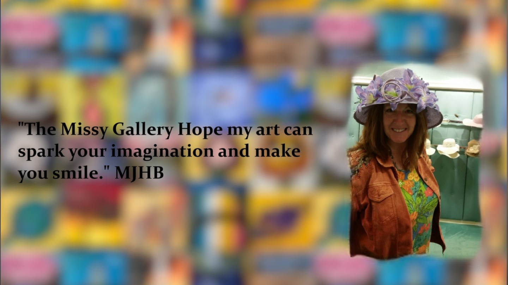

About Missy
Missy is a Daughter, a Mother, and a Child of God. Missy loves her family and animals. She also loves to meet new people and make new friends. Even her business is focused on people, giving her the opportunity to meet new people. She has made a difference in many lives.
"I love God, friends, family & animals. I love to paint & write poetry. I especially love to be free."